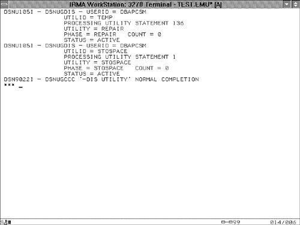

Monitoring DB2 Utilities
Online DB2 utilities can be monitored and controlled using DB2 commands. The DISPLAY and TERM commands can be used for this purpose. For example, the DISPLAY command can be entered as
-DISPLAY UTILITY (UID)
or
-DISPLAY UTILITY (*)
NOTE
The -DISPLAY command can be abbreviated to -DIS for simplicity.
The TERM command also can be entered by specifying a wildcard or a UID. The recommendation is to specify a UID when terminating utilities, because an asterisk indicates that every utility known to DB2 should be terminated. Enter the TERM command as
-TERM UTILITY (UID)
The -DISPLAY UTILITY command provides information about the execution status of the utility named by the utility ID. When this command is issued, it returns a screen similar to the one shown in Figure 30.5. This screen lists the following information:

USERID | The user ID of the job performing the utility. | UTILID | The utility ID assigned in the UID parameter on the EXEC card. If the UID parameter is not provided, UTILID is the same name as the jobname. | STATEMENT | The number of the control card containing the utility statement that is being processed (if more than one utility control card is supplied as input to the utility step). | UTILITY | The type of utility that is being executed. For example, if a reorganization is run, UTILITY contains REORG. | PHASE | The phase of the utility being executed. The phases for each utility are discussed in Part VI. | COUNT | A count of the number of records (pages or rows, depending on the utility and phase being monitored) processed by the phase. Count also may be the number of index entries being processed. Count isn't always kept by every utility phase, however. | STATUS | The status of the utility. ACTIVE indicates that the utility is currently active and should not be terminated. If terminated, the utility will abend. STOPPED means that the utility is currently stopped and should be restarted or terminated, depending on the state of the job and the procedures in place for restarting or rerunning. |
The TERM command terminates the execution of a DB2 utility. Think carefully before terminating a utility. After a utility is terminated, it cannot be restarted. Instead, it must be rerun, which involves reprocessing.
Five types of online DB2 utilities are provided:
Data consistency utilities Backup and recovery utilities Data movement and organization utilities Catalog manipulation utilities Miscellaneous utilities
|